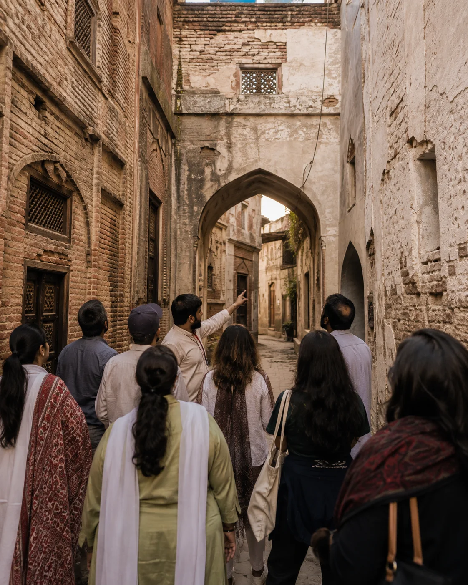
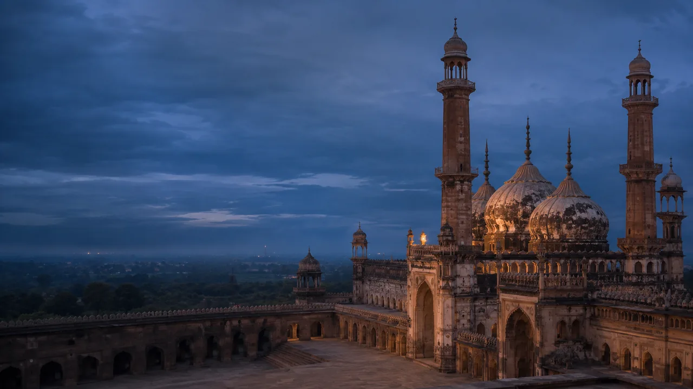
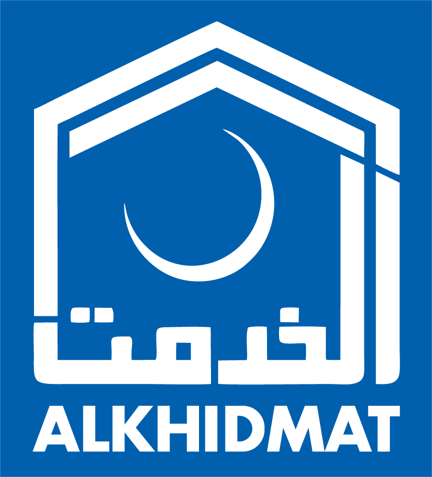
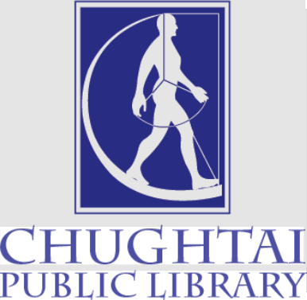
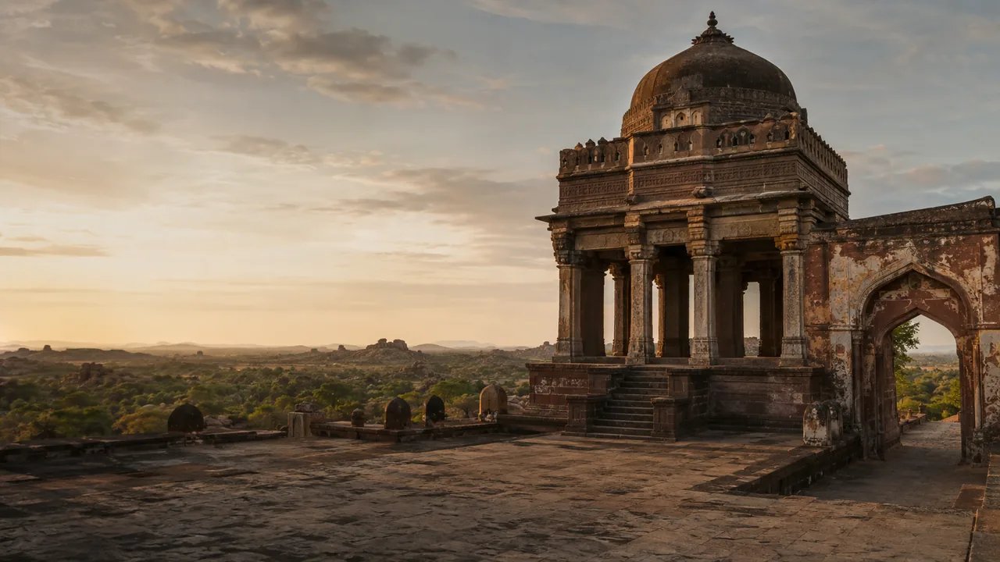

DEMO
4:00 pm
Lahore (demo)
occurrence
DEMO — Evening heritage walk
A test occurrence for schedule and registration flows.
open

Discover Pakistan through Virsapur
Explore remarkable places, experience living culture and connect with the stories that shape Pakistan.
Pakistan · temporary development photograph
Explore by place
Discover heritage through its provinces, regions and districts.
Administrative boundaries use the verified Virsapur district dataset. The map stops at district level and preserves stable geographic identifiers.
Regional context: Natural Earth 1:110m Admin 0 — Countries, version 5.1.0. Natural Earth and Virsapur’s authoritative Pakistan layer share one regional equirectangular projection and viewport.
What’s happening

4:00 pm
Lahore (demo)
occurrence
A test occurrence for schedule and registration flows.
open

11:00 am
Online (demo)
occurrence
A test workshop occurrence.
open

3:00 pm
Online (demo)
occurrence
A free example activity for the What’s On calendar.
open

10:00 am
Preview only — no real venue
occurrence
Artificial 2099 date for QA only. Inherits Wazir Khan Mosque and Taxila from its DEMO Programme; no real activity is scheduled.
open
Enquire
10:00 am
Preview only — no real venue
occurrence
Artificial 2099 date for QA only. Explicitly links Rohtas Fort in addition to the parent DEMO Programme places; no real activity is scheduled.
open
EnquireWays to take part
Walk through history, learn with cultural practitioners and build thoughtful heritage work together.

Experience
Guided encounters with ancient landmarks, living neighbourhoods and the stories that shaped them.
Explore
Learn
Immersive learning that connects history, material culture and community knowledge.
Explore
Our work
Research, documentation and interpretation supporting the preservation of cultural heritage.
Explore
Events & collaboration
Public programmes and partnerships that foster creativity, dialogue and cultural participation.
ExploreResearch & preservation

project
A multi-layered conservation project focused on historical landmarks, local craftsmen and sustainable urban tourism.
Explore
project
Creating accessible records and public-facing interpretation around places of cultural importance.
ExploreExplore by theme
Purpose
Bridge historical knowledge and public engagement through research, interpretation and shared experience.
A future in which Pakistan’s diverse heritage is visible, understood and carried forward with care.


About Virsapur
Virsapur connects research, education and cultural experience so more people can encounter Pakistan’s heritage—and help protect it.
Meet Virsapur →Collaborators
 Global Shapers Community
Global Shapers Community
Alkhidmat Rukh Foundation
Rukh Foundation EARC
EARC Lahore Museum
Lahore Museum
Chughtai Public Library Digital Archaeology Group
Digital Archaeology GroupStart your journey
Plan a heritage experience or begin a cultural collaboration with Virsapur.
